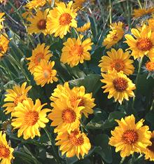
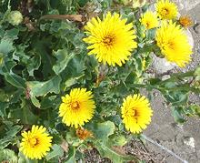

SAFARI
Users
- Daisies Familiar in North America
- Daisies Less Familiar in North America
- Lettuces & Chicories
- Artichokes & Thistles
- Roots, Seeds & Oils
Daisies Familiar in North America
Bitter Leaf
[Many, many names - see their Bitter Leaf page; Veronia amygdalina, V. colorata, V. calvoana, probably others]
This plant is actually not yet well known in North America, but as
African cuisines become more popular, Bitter Leaf is becoming better
known, Also, it's many very strong medicinal attributes are causing it
to become more prominent. It is still in short supply here, so still
quite expensive, but easy to grow. About 1000 species of Veronia
are native to Africa, North and South America and Asia, and are used
medicinally throughout its range, but only in Sub-Saharan Africa are
these shrubs or small trees used to provide nutritious leafy greens. The
leaves are particularly used in Nigeria and Zimbabwe in soups, including
Bitter Leaf Soup, and in stews The photo is of
Vernonia amygdalina, recently sprouted from a cutting.
Details and Cooking.
Calendula
 [Pot Marigold; Calendula officinalis]
[Pot Marigold; Calendula officinalis]
This plant, probably from southern Europe, is well known in North
America as a medicinal tea ingredient and for fresh petals scattered
on salads to add color interest. Fresh leaves have been used in salads
and as a pot herb, but palatability varies with variety. Flowers and
sometimes leaves were once commonly used in soups in Germany, thus
the name "Pot Marigold".
Details and Cooking.
Photo by Wildfeuer distributed under license
Creative Commons
Attribution-ShareAlike v3.0 unported.
Marigolds
- [Genus Tagetes]
French Marigold [Imeruli Shaphrani (Georgia); Tagetes patula alt
Tagates remotiflora]
[Imeruli Shaphrani (Georgia); Tagetes patula alt
Tagates remotiflora]
This plant is native to the highlands of southern Mexico and Guatemala,
but has become widespread for decorative, aromatic and culinary uses.
In the cuisine of Georgia (former Soviet Republic of), marigold
petals (Tagetes patula) are a very important herbal flavoring.
The dried petals are very aromatic. Powdered, they add both color and
an earthy aroma to many recipes. Marigolds are also fed to chickens
to get a nice rich color in the yolks of their eggs. Unfortunately
dried petals are very difficult to find in North America. About the
only way to get them is to grow your own marigolds. Calendula petals
are as close as we can buy. They are aromatic but are not the same.
Details and Cooking.
Photo by Dori distributed under license Creative Commons
Attribution-ShareAlike v3.0 unported.
Huacatay [Huacatay (Peru); Huacataya (Bolivia); Black Mint, Muster John
Henry, Southern Cone Marigold, Stinking Roger, Wild marigold;
Anisillo (Spanish); Chinchilla, Chiquilla, Chilca, Zuico, Suico
(South America); Tagetes minuta]
[Huacatay (Peru); Huacataya (Bolivia); Black Mint, Muster John
Henry, Southern Cone Marigold, Stinking Roger, Wild marigold;
Anisillo (Spanish); Chinchilla, Chiquilla, Chilca, Zuico, Suico
(South America); Tagetes minuta]
This herb, native to western South America, has become naturalized in
all other continents except Antarctica. It is very important as a
culinary herb in Peru, Ecuador, and parts of Bolivia and Chile,
fresh, dried and put up in jars as "Black Mint Paste". The paste is
very important to the famous Peruvian potato dish Ocopa, while the
dried is used as a seasoning and to make teas considered to have
medicinal value.
Details and Cooking.
Photo by Paul Venter distributed under license
Creative Commons
Attribution-ShareAlike v3.0 unported.
|
Chamomile
 [German
Chamomile, Wild Chamomile; Manzanilla (Spanish);
Matricaria chamomilla | English Chamomile,
Roman Chamomile, Low Chamomile; Manzanilla (Spanish);
Chamaemelum nobile alt Anthemis nobilis]
[German
Chamomile, Wild Chamomile; Manzanilla (Spanish);
Matricaria chamomilla | English Chamomile,
Roman Chamomile, Low Chamomile; Manzanilla (Spanish);
Chamaemelum nobile alt Anthemis nobilis]
Chamomile has a long history (since ancient Egypt) as a medicinal. Chamomile tea is often used for a calming effect encouraging sleep, as an anti-inflammatory, and for stomach problems. It is the flowers (usually dried) that are used. They should be steeped at very close to boiling, covered to prevent escape of volatile oils, and then crushed before straining.
German Chamomile, native to Europe and Asia and introduced to
North America and Australia, is the species most used for tea. It has an
upright branching growth pattern with long flower stems. The photo
specimens were purchased from a multi-ethnic market in Los Angeles.
English Chamomile, found in Europe, North America and Argentina, is
used medicinally, in aromatherapy, and as ground cover (the lawn of
Buckingham Palace is chamomile, not grass). It has a low, semi-recumbent
growth profile and feathery leaves.
Common Chinchweed
[Limoncillo (Mexico); Many-bristle chinchweed, Many-bristle fetid-marigold; Pectis papposa]
This low growing plant is native to the United States Southwest as far
east as Texas and into northern Mexico. In Mexico the herb is sold as
Limoncillo and used as a flavoring for meat dishes. The
Havasupai, of the Grand Canyon region, parch and grind the seeds for use
in mush and soup, and dip the greens in salt water for use as a
condiment. The Pueblo people use it as an herbal flavoring.
Photo by Stan Shebs distributed under license Creative
Commons
Attribution ShareAlike 3.0 Unported, attribution required.
Chrysanthemum
[Tong Ho (China); Ssukgat (Korea); Pak thang-o (Thai); tan o, cai cúc (Viet); Skal bzang, kelsang (Tibet); Shungiku (Japan); Gui-chini (India); Garland Chrysanthemum, Crown Daisy; Chrysanthemum coronarium]
Native to the Mediterranean region, these slightly bitter greens are now
popular in most Asian cuisines, particularly for soups and stews, but also
for stir fries. In Taiwan they are used in oyster omelets, a popular night
market food, and in Korea as one of the many Banchan (small side dishes)
served with a Korean meal. Young shoots are eaten in Crete, and flowers,
fresh or dried, are used in herbal teas. Most common here in Southern
California is the Small Leaf Tong Ho, as in the photo, but a Broad Leaf
Tong Ho is occasionally seen.The greens are high in potassium, other
minerals, carotene and antioxidants.
Details and Cooking.
Coltsfoot
[Tashplant, Horsefoot, Farfara; Coughwort (Old English); Tussilago farfara]
Native to Europe through Central Asia, and introduced to East Asia and
North and South America, this plant puts up dandalion like flowers before
it leafs out. Once leafed it no longer puts up flower. It has
traditionally been used as a medicinal tea. In Japan and some other
regions it is used as a minor vegetable. Caution: this plant has
been found to contain a highly mutagenic Pyrrolizidine alkaloid which can
cause liver disease, particularly in children. One child is on record
for having died of liver disease because the mother drank coltsfoot tea
during pregnancy, but there may be many unreported cases.
Dandelion
[Dent-de-lion (Old French), Pissenlit (French), Taraxacum officinale]
Originating in Eurasia and now infesting lawns worldwide, this common weed is a highly successful member of the vast daisy family (Asteraceae). Its long taproot makes it very difficult to eradicate and its efficient windblown seed dispersal system assures reinfection. It prefers temperate climate and moist soil, which is why it has such an affinity for lawns. The photo specimen leaves were up to 14 inches long, but they are sold up to about 16 inches.
The plant has both medicinal and culinary value. Young leaves are used
raw in salads while older ones are more often cooked or added to soups. .
Under their bitterness the leaves have considerable sweetness and have a
particular affinity for eggs. Roots are used, as are chicory roots, to make
a coffee substitute, and flower heads are used to make dandelion wine. The
leaves are a strong diuretic, thus the French name Pissenlit (wet the bed).
Herbalists consider dandelion a general tonic and "blood cleanser".
Details and Cooking.
Daisy, Common
[Lawn Daisy, English Daisy; Bellis perennis]
This low flowering herb is native to western, central and northern
Europe, but is now common in the Americas and Australasia, and other
temperate regions. It is often considered a troublesome weed, particularly
in lawns. Young leaves can be eaten raw in salads or cooked as a potherb.
Leaves become more astringent as they age. Flower buds and petals are
used in sandwiches, soups and salads.
Photo by WiZZiK distributed under license
Creative Commons
Attribution-NonCommercial 3.0 Unported.
Daisy, Oxeye
[Leucanthemum vulgare]
This herbacious flowering plant is native to Europe and temperate parts
of Asia. It has been naturalized in North America, Australia and
New Zealand, and is often considered a noxious weed in those regions.
Unopened flower buds can be pickled and used similarly to capers.
Photo © Rob Bendall permission granted, attribution
required.
Indian Aster
[Ma Lan Tou (China); Chinese Cress (frozen packages from China); Kalimeris indica]
This plant is most common in China, Korea and Japan, but has been introduced to Hawaii and California by the large Asian populations in those states. It has a long history as a green leafy vegetable in Asia, with a unique flavor. It is particularly popular south of the Yangtze River in China. The photo is of three leaves carefully unraveled from a mass of frozen leaves and tender stems. The flowers look just like the Common Daisy except the petals are sometimes pale purple rather than white.
The taste is similar to Chrysanthemum leaves, but milder, and it's
main use seems to be for making various salads combined with tofu. I
haven't yet seen it fresh here in Los Angeles, but the Asian markets
carry it frozen labeled "Chinese Cress", a name which more properly
belongs to Shepherds Purse (Capsella bursa-pastoris) in the
cabbage family. The whole plant, particularly the root, is used in
traditional Chinese medicine.
Pápalo
[Bolivian Coriander; Pápalo (Mexico); Quillquiña (Bolivia); Yerba Porosa, Killi, Tepegua, pápaloquelite: Porophyllum ruderale]
Native to Mexico and South America, this plant, despite the English name
"Bolivian Coriander", is not at all related to Coriander. Also note that
it is one of two similarly used and closely related plants called
Pápalo. The other one, with long thin leaves, is
P. linaria. This plant grows to 5 feet high
and 3 feet across. It is used as a culinary herb by many cuisines through
its range, and is very popular in Pueblo in central Mexico. Some is now
grown for the Southern California market.
Details and Cooking
Pipicha
[Pipicha, Pepicha, Tepicha, Escobeta, Chepiche, Cola de coyote (Mexico); Pápalo (incorrect): Porophyllum linaria]
This plant visually resembles tarragon, but it doesn't taste like
tarragon - well, maybe just a hint. It is native to Mexico and used in
Mexican cuisine, often in meat dishes. Fresh leaves are also used as a
table condiment, particularly in Pueblo in central Mexico. The flavor is
similar to that of its close relative Pápalo,
but not quite as strong. It has been described as similar to Cilantro
but with overtones of Lemon and Anise. The photo specimens were sold as
stems about 13-1/2 inches long, with leaves about 1.4 inches long and
0.18 inch wide. They were purchased from a large multi-ethnic market
in Los Angeles. Picked just before flowering, they had a few unopened
purple flower buds. Note that this herb is sometimes called Pápalo,
a name that more properly belongs to the very closely related broader
leafed herb P. ruderale.
Details and Cooking
Pineappleweed
[Wild Chamomile, Disk Mayweed; Matricaria discoidea]
This Chamomile is native to North America from Alaska to Northern California
and east to Newfoundland, and to Northeastern Asia. It is used medicinally
similarly to other chamomiles. The flower heads, which have no petals, are
edible, used in salads, but may become bitter as they mature.
Photo by Krzysztof Ziarnek distributed under license
Creative Commons
Attribution
ShareAlike 3.0 Unported.
Stevia
[Sweetleaf; Stevia rebaudiana]
This plant, native to Paraguay and Brazil, is noted for the extreme sweetness of its leaves - up to 45 times sweeter than sugar. Extracts are up to 300 times sweeter than sugar and are extremely low in carbohydrates and calories. These characteristics make it very desirable as a general sweetener.
Since 2008, extracts have been legal as dietary supplements and food
additives in the United States, and since 2011 in the European Union, but
not yet in table packets as in Japan. It is available as a food additive
in Australia, New Zealand and Mexico, among others, and as a dietary
supplement in Canada. Growing the plant is legal in most countries. The
FDA has been very cautious, because they fear Americans will overdo stevia
(like they do with any other "in" substance). The FDA did receive an
anonymous toxicity report (probably sponsored by the artificial sweetener
industry) but no conclusive dangers have yet been confirmed.
Tarragon
Tarragon is native to the Northern Hemisphere from Eastern Europe across Asia in cooler climates. It was probably introduced to Western North America by early migrants and now grows as far south as a little below the Mexican border. Tarragon is much used in French cuisine where it is an essential ingredient for Bérnaise Sauce and mixed with other herbs (typically chives, chervil and parsley) for the boquet called "fines herbes". It is also used in many other cuisines, particularly that of Georgia. Because dried tarragon is useless the flavor is often preserved in vinegar (tarragon vinegar) for use when out of season.
French Tarragon[Estragon (French and other); Artemisia dracunculus]
French tarragon is greatly preferred to Russian but is rarely
available in the U.S. because it's so hard to grow. Not only can it
not be propagated from seed, but it can't grow long in the same place
because it poisons its own soil. It must be propagated by root
division in the spring and planted in fresh soil. The leaves of
French Tarragon are whiter and narrower than those of the Russian.
It is thought to be a mutant form of the Russian.
Photo by Ies contributed to the Public Domain.
Russian Tarragon[Artemisia dracunculoides] Russian tarragon is more closely related to the wild form
(originally from Siberia) than the French, but considered inferior in
flavor. Unfortunately it's what you'll always find in the stores
because it's much more robust, easier to grow and can be grown from
seed. Russian Tarragon leaves are wider and a fresher green color than
those of French Tarragon. Russian tarragon looses flavor as it ages,
but that found in markets here in Southern California is quite
consistent, so I presume it is being treated as an annual and planted
from seed every year.
Mexican Tarragon[Mexican Marigold, Pericon; Tagetes lucida] Native to Mexico and Central America, this small shrub grows well in dryer and hotter regions where French and Russian tarragon would die. The leaves, which are medium green rather than blue-green as with French and Russian tarragon, are used as an herb, and are considered a better substitute for French Tarragon than the Russian. Dried leaves are used as a tea, and are burned as an insect
repellant. It is also burned as an incense, which is supposed to have
some mind altering effect. The flowers are used in ceremonies and
offerings during the Mexican "Day of the Dead". Photo
by Don Manfredo distributed under license Creative Commons
Attribution ShareAlike 3.0 Unported.
|
Wormwoods
Wormwoods are numerous and widespread over the Northern Hemisphere, including dry regions of the Southwest United States. They have some culinary virtues, but are more noted as medicinals and as flavorings for alcoholic beverages.
Wormwood[Artemisia absinthium | Mexican Wormwood Artemisia mexicana] Wormwood, native to temperate regions of Eurasia and Africa, has a long history as a bitter herb, medicinal, and flavoring for beverages (particularly Absinthe, Vermouth and various bitters, and Mexican Yolixpa). It is also sometimes used in beer in place of hops. It is now naturalized in much of North America. The Mexican variety is all but identical and some botanists think it's just a variant of the same species. In Mexico it is dried and smoked for an effect similar to that of marijuana
(1 to 3 grams). Taken internally 4 grams (dried) can expel parasitic worms
(thus the name "wormwood") and larger doses can induce abortion. Wormwood oil
is highly toxic, but the amounts used in beverages are too small to cause
problems. I did, however, read of one young man who, upon hearing it was the
active ingredient in Absinthe, took some straight wormwood oil to experience
a high. His experience was more of the near death kind. The photo
specimen is Mexican Wormwood fronds about 8 inches long, purchased from a
specialty grower at a Los Angeles farmer's market.
Southern Wormwood[Southernwood, Old man, Lad's love, Lover's plant, Maid's ruin, Appleringie; Garderobe (French); Artemisia abrotanum]
Native to Southern Europe, this herb is most famous for hanging in
closets to keep moths away, and as a deodorizing strewing herb,
particularly for bedrooms, as it was thought to have aphrodisiac
properties. As a culinary herb it has been used (sparingly) to flavor
pastries and puddings, and is still in use in parts of Italy.
Photo by Kurt Stüber distributed under license Creative
Commons
Attribution ShareAlike 3.0 Unported.
Small Wormwood[Artemisia pontica]
Native to Southern Europe, this herb is now naturalized over most of
Europe and northeast North America. It is cultivated in Spain and
Lithuania for use as the main flavoring in Absinthe and Vermouth. It is
considered less bitter than the larger Artemisia absinthium.
Photo from www.biolib.de distributed under license Creative
Commons
Attribution ShareAlike 3.0 Unported.
Mugwort[Cronewort; Janlim; Artemisia vulgari | Yomogi (Japan); Artemisia princeps | Chinese Mugwort; Aicao, Aiye (China); Gaiyou (Japan); Artemisia argyi]
This herb is native to temperate Europe, Asia, Northern Africa and Alaska,
but has been naturalized in other parts of North America. Mugwort looks
a lot like wormwood, but the leaves are darker on top than underneath
while wormwood is about the same color top and bottom.
This herb, with a slightly bitter taste, is used to season fish and meat,
especially game. In Germany it is traditionally used to season the
Christmas goose. In Asia, Mugworts are used to color and flavor
glutinous rice dumplings (Mochi) and some Korean noodles. In Japan,
young leaves are used as a pot herb and sometimes raw in salads. Dried
leaves and flower heads are used for an herbal tea. Mugwort was formerly
used as the bitter flavoring for beer, but was replaced by hops, which
have the advantage of being strongly anti-bacterial.
Photo by Christian Fischer distributed under license Creative
Commons
Attribution ShareAlike 3.0 Unported.
California Sagebrush[Artemisia californica]
This plant is native to California and about 200 miles into Baja
California, Mexico. It is a member of the coastal scrub through most
of its range, but goes far inland in some regions of the state.
Sagebrush is not at all related to the herb Sage (which also grows
profusely in California), but it can also be used as a seasoning herb,
and be used to make herb teas. It once had wide usage as a medicinal
by the Indian tribes of Southern California, particularly for colds,
menstrual cramps and labor pains.
Photo by U.S. National Parks Service = Public Domain
.
Carruth's Sagewort[Artemisia carruthii]
This shrub is most common in Arizona, New Mexico, Utah and Colorado.
Seeds are harvested by the Zuni people of New Mexico, ground, mixed
with water, formed into balls and steamed. It is considered one of
their most important foods, and is also used medicinally.
Drawing from Britton, N.L., and A. Brown. 1913. An
illustrated flora of the northern United States, Canada and the
British Possessions.
|
Daisies Less Familiar in North America
Aqub
[Aqub, Akub (Arabic); Gundelia tournefortii]
This semi-desert plant is native to the Levant, Iraq, Iran, Azerbaijan,
Armenia and Anatolia. In the region it is gathered by Muslims, Christians,
Druze and Sephardic Jews alike, and sold in some markets. When the plant
is young the leaves are fairly tender and edible, but still need to be
de-thorned. In one popular dish it is covered in minced meat and fried
in olive oil, then simmered with lemon juice. It is also used for
medicinal purposes.
Photo by lorsh contributed to the Public Domain.
Aster Scaber
[Chwinamul, Chamchwi (Korea); Shirayamagiku (Japan); Aster Scaber]
This perennial herb is common in mountain regions of China, Japan. the Russian East, and particularly Korea. It is in cultivation in Korea, where the young, tender stems are considered a welcome harbinger of Spring. The rest of the year, dried shoots are used. It has a unique herbal aroma and a pleasant bitterness.
As the plant gets older, it sends up a hard stalk about 4 feet high,
with widely spaced leaves, and a profusion of thin branches at the top
with small white aster-like flowers on the tips.
Details and Cooking.
Photo by Dalgial distributed under license Creative Commons
Attribution-ShareAlike v3.0 Unported.
Balsamroot
 [Arrowleaf Balsamroot; Balsamorhiza sagittata | Deltoid Balsamroot; Balsamorhiza deltoidea]
These herbaceous plants are native to western North America from British
Columbia south to California and east to the Dakotas. They were once
far more common than they are today and were important to the American
Indians. They have been greatly reduced by over-grazing and trampling.
Seeds were ground for breads and cakes, and for cooking oil. The tap
roots were eaten both raw and cooked. The foliage is edible but is
bitter with a pine resin scent.
Photo by Cory Maylett distributed under license Creative
Commons
Attribution-ShareAlike v3.0 Unported.
Brighteyes, Common
 [Galatsida (Crete); Reichardia picroides]
Native to the Mediterranean region, a variety of R. picroides is
used for food on the island of Crete (and probably elsewhere). Leaves
are eaten raw, steamed, or fried lightly brown in olive oil.
Photo by
Forest & Kim Starr
distributed under license Creative Commons
Attribution-ShareAlike v3.0 Unported, Attribution Required -
Notification Appreciated.
Cape Snow Bush
[Wildroosmaryn, Kapokbossie (Afikaans); African Rosemary, Wild Rosemary; Eriocephalus africanus]
While not at all related to real Rosemary (a mint, not a daisy), Cape
Snow Bush, a shrub growing to 3 feet high, is used similarly as a
culinary herb. It is native to South Africa, and when the profuse white
flowers have finished and it's gone to seed, it looks really
snowy, completely covered with white woolly puffs where the flowers had
been. Livestock, particularly sheep, that have grazed on this plant are
prized for their flavor. This plant is also used as a medicinal and as
a hair conditioner.
Photo by Dinkum distributed under license Creative
Commons
.
Cat's Ear
[Flatweed, False Dandelion; Hypochaeris radicata | Brazilian Cat's Ear; Hypochaeris brasiliensis]
H. radicata is native to Europe, but has been introduced to the Americas, Japan, Australia and New Zealand. It can often be a troublesome weed, and is listed as a noxious weed in Washington State. H. brasiliensis is native to South America, but is also now a common weed in the United States, particularly in the southeast. Cat's Ear is easily recognized from it's low lying basal rosette of deeply toothed leaves and tall, solid and branching flower stems. H. radicata leaves are quite hairy on the underside, H. brasiliensis only a little hairy.
All parts of the plant are edible, either raw in salads or cooked as
greens, but the leaves are most often used. They tend to be bland and
only occasionally have bitterness. The root of H. radicata is most often
roasted for use as a coffee substitute. The photo specimen is of H.
brisiliensis.
Photo by Matthias Buchmeier distributed under license Creative
Commons
Attribution ShareAlike 3.0 Unported.
Cosmos, Pink
 [Ulam Raja (Indonesia); Cosmos caudatus]
[Ulam Raja (Indonesia); Cosmos caudatus]
This fine leafed plant originated in Mexico and was introduced to
Southeast Asia through the Philippines by the Spanish. The flowers can be
pink, purple or white. It is now popular in Indonesian and Malay cuisine,
particularly for the salads Urap and Pecel. Other species of Cosmos also
have edible leaves, but the flavor is considered far inferior to
C. caudatus. Malaysians also consider this plant to have
anti-aging properties and to be a blood circulation toner. The photo
was taken in Japan.
Photo by
 distributed under license Creative
Commons
Attribution-ShareAlike v3.0 Unported.
distributed under license Creative
Commons
Attribution-ShareAlike v3.0 Unported.
Fuki
[Giant butterburr, Bog Rhubarb, Sweet coltsfoot; Petasites japonicus | Petasites frigidus (Arctic Butterburr)]
Native to Japan, Korea, Russia's Sakhalin Island and parts of northeastern China, this plant has been introduced to western Canada and Washington State by Japanese immigrants. This is a very strange plant. It starts out at the end of winter putting up flower head shoots that look sort of like a light green cauliflower (see photo). The flower heads rise on a stalk and spread out. These are followed by huge rhubarb like stalks more than 3 feet long with leaves over 2 feet across, but round, not arrowhead shaped like rhubarb.
The stems are eaten in Japan and Korea. The traditional preparation in Japan is to treat them with ashes or baking soda, then soak in water to reduce astringency. The back side is very stringy, worse than celery, so after a brief boiling the strings are peeled off. The stems can then be cooked like a vegetable (red stems are not considered suitable, only green). In Korea, steamed or boiled stems are wrung out, then seasoned with sesame or perilla oil and served as a side dish. The young flower heads can be fried as tempura. They may also be chopped and stir fried with miso to make a condiment for rice.
It should be noted that this plant contains pyrrolizidine alkaloids
that can cause cumulative liver damage and another known to be
carcinogenic, so proper preparation is important to reduce their
concentration.
Photo by Claes Lööw distributed under license Creative
Commons
Attribution ShareAlike 3.0 Unported.
Goldenrod
Most goldenrods are native to North America, mostly east of the Rocky Mountains and from central Canada to Florida, but have become invasives in East Asia and Germany. There is one goldenrod widespread in Europe, Solidago virgaurea, used medicinally. Young goldenrod leaves are edible, and seeds, particularly of S. nemoralis, were used by American Indians for food. Goldenrod is also often included in herbal teas, but the main culinary use for goldenrod is in the production of honey by bees. Goldenrod is often blamed for causing hay fever, but it is actually caused by ragweed which blooms at the same time. The photo is of S. gigantea, found in most of North America east of the Rockey Mountains. Photo by Pethan distributed under license Creative Commons Attribution-ShareAlike v3.0 Unported.
Golden Samphire
[Limbarda crithmoides]
This plant grows in salt marshes and on sea cliffs all across Eurasia.
Young green leaves, which are succulent, may be eaten raw in salads or
cooked.
Photo by Chilepine contributed to the Public Domain.
Guasca
[Gallant Soldier (from Galinsoga), Quickweed, Potato Weed (UK, USA); Guasca (Colombia); Mielcilla (Costa Rica); Piojito (Oaxaca, Mexico); Galinsoga (New Zealand); Mwamuna aligone (Malawi): Galinsoga parviflora]
This herb is native to South America, but has become naturalized in many
regions of the world, including North America. It is most noted as a flavoring
ingredient in Colombian Ajiáco Soup, but is also eaten in East Africa
and elsewhere within its range.
Details and Cooking
Photo by Hugo.arg distributed under license Creative
Commons
Attribution-ShareAlike v4.0 International.
Hawkbitt, Tuberous
[Glykovyzia, Glykoradika, Vyzakia (Crete); Leontodon tuberosus]
Native to the eastern Mediterranean region, this plant is used for food
on the island of Crete (and probably elsewhere). The tuberous roots are
eaten raw, while the leaves are eaten steamed.
Photo by Ariel Palmon distributed under license Creative
Commons
Attribution-ShareAlike v3.0 Unported.
Hawksbeard
[Glykosyrida (Crete); Crepis commutata | Kokkinogoula, Lekanida, Prikousa (Crete); Crepis vesicaria | Maryies, Pikrouses (Crete); Crepis ???]
These small herbaceous plants apparently originated in the Mediterranean
region, but about 200 Crepis species are found through most of
the Northern Hemisphere. Leaves of the above species are eaten on the
island of Crete (and probably elsewhere), raw in salads, or leaves and
tender shoots are steamed or boiled and eaten as a green vegetable.
The photo is of C. jacquinii, but it looks just like
C. commutata.
Photo by Jerzy Opiola distributed under license Creative
Commons
Attribution-ShareAlike v3.0 Unported.
Jambu
[Pancress; Buzz buttons, Szechwan buttons, Sansho buttons, Electric buttons (flower buds); Acmella oleracea]
This plant is native to northern Brazil, but it is planted as a decorative in various parts of the world and extracts are used as a flavoring worldwide. In Brazil, small amounts of fresh leaves are added to salads for a unique flavor. Leaves combined with garlic and chilis are a popular ingredient in stews.
The flower buds have a grassy taste, but provide a numbing or
tingling effect in the mouth similar to the very unrelated Sichuan
Peppercorns of southern China. A major reason for using the extracts,
which have a somewhat citrus aroma, is that they provide a strong mouth
watering effect along with the tingly sensation. The plant and extracts
also have medicinal uses, particularly for toothache (Sichuan Peppercorn
and other Prickly Ash fruits are also used for this purpose).
Photo by Phyzome distributed under license Creative
Commons
Attribution ShareAlike 3.0 Unported, attribution required.
Jersey Cudweed
[Shuqucao (China); Hahagohusa, Houkogousa (Japan); Rau khúc. (Viet); Gnaphalium affine]
This plant is found in temperate regions of China, Japan, Taiwan and
Korea, and in the mountains of Vietnam, Nepal, India and Thailand.
Throughout the region it is associated with Sweet Rice, and in some
regions with noodles and dumpling wrappers, sometimes as an alternative
to Mugwort. In these applications it provides both a unique flavor and
a green coloring. In China it is used to flavor scallion pancakes. Where
the name Jersey Cudweed came from I don't know, and Wikipedia considers
it "citation needed".
Photo by KENPEI distributed under license Creative
Commons
Attribution-ShareAlike v3.0 Unported.
Marsh Ragwort
[Northern Swamp Groundsel, Marsh Fleabane, Marsh Fleawort, Clustered Marsh Ragwort, Mastodon Flower, Senecio congestus]
This plant is found throughout North America from the Great Lakes region
of the United States north into the Arctic Circle, including all of
Canada and Alaska. In Europe it is found in Spain and France, and in
Sweden, Poland, the Baltic countries, and south through Ukraine and well
into Russia. Unlike other members of genus Senecio, this plant is
considered safe for human consumption, raw or cooked. Young leaves and
flowering stems are used in salads, and cooked as a potherb. It is also
salt fermented like sauerkraut.
Photo by Tigerente distributed under license Creative
Commons
Attribution ShareAlike 3.0 Unported.
Nipplewort
 [Lapsana communis]
[Lapsana communis]
Native to the Europe and western Asia, this plant has a long history
as food, the leaves served raw in salads or cooked like spinach. The
English name comes from its medicinal use in Medieval times, derived
from the absurd religion based "Doctrine of Signatures". Someone thought
the closed flowers resembled nipples, so this must be God's signal that
this was the herb to use to treat breast lesions. No scientific
testing needed - that would be questioning God.
Photo by
Forest & Kim Starr
distributed under license Creative Commons
Attribution-ShareAlike v3.0 Unported, Attribution Required -
Notification Appreciated.
Okinawan Spinach
[Hongfeng cai (China); Gynura bicolor]
Native to East Asia, there are two cultivars of this plant. One is green
on both sides of the leaves, the other purple on the underside, but they
are considered equivalent for food and medicinal purposes. In China,
leaves of this plant are considered "cool", so are usually stir fried
with sesame oil and ginger to balance with "hot". The leaves are rich
in iron, potassium, calcium, and vitamin A. Stems and roots are boiled
in water to make a medicinal tea. I have not yet seen these leaves for
sale in Los Angeles.
Photo by Alex Lin contributed to the Public Domain.
Redflower Ragweed
[Ebolo, Efo Ebolo (Nigeria); Thickhead, Fireweed; Crassocephalum crepidioides syn. Gynura crepidioides]
While used as a green leafy vegetable in many tropical and subtropical
regions, this plant is particularly popular in tropical Africa. The
slightly succulent mucilaginous leaves and stems are cooked as a
vegetable. Many parts of the plant are used medicinally, but internal
use for either food or medicine needs more study because the plant
contains a number of nasty plant toxins.
Details and Cooking.
Photo by
Forest & Kim Starr
distributed under license Creative Commons
Attribution-ShareAlike v3.0 Unported, Attribution Required -
Notification Appreciated.
Skeletonweed
[Hogbite, Gum Succory, Devil's Grass, Nakedweed, Rush; Ampelosyrida, Glykosyrida (Crete); Chondrilla juncea]
Native to Europe, Asia and North Africa, this plant is now known as a
difficult to eradicate noxious weed through much of the Northern
Hemisphere temperate zone. Young shoots are used in salads, raw,
steamed or boiled, on the island of Crete. They are known to be
similarly used by ethnic Albanians in southern Italy, which suggests
they are also used in the Balkans.
Photo by pjt56 distributed under license Creative
Commons
Attribution-ShareAlike v3.0 Unported, Notification appreciated
.
Sow Thistle, Alpine
[Bear Hay (Finland); Insalata Dell'Orso ("Bear Salad" - Italy); Cicerbita alpina]
This plant, which can grow to nearly 60 inches high but is usually around
31 inches, is native to all the mountain ranges of Europe, from the
Pyrenees to the Urals, including Scandinavia. Shoots of this plant
are considered a delicacy in northern Italy, cooked and served with
olive oil and/or tomato sauce. Used both in homes and in restaurants, it
is currently gathered wild. Due to the probability of over-harvesting,
pilot plots are being planted to prove it for agriculture.
Photo by Michael Becker distributed under license Creative
Commons
Attribution-ShareAlike v3.0 Unported.
Sow Thistle
[Common Sowthistle, Smooth Sow Thistle, Hare's Colwort, Hare's Thistle, Milky Tassel, Swinies; Sonchus oleraceus | also Prickly Sow Thistle, Spiny sow thistle, Sonchus asper]
This mildly bitter herb is native to Europe, Asia and Australia, and is
an invasive in many other parts of the world. Leaves are used raw in
salads or blanched similarly to spinach and eaten as a vegetable,
particularly in China.
Blanching or wet cooking reduces the bitterness. It is considered
palatable and very nutritious. These plants can grow to 6 feet high and
the flowers are in clusters. You can see a cluster of buds on the leaf
in the photo. S. asper, native to Europe but a common weed in
North America, must be handled carefully, as some people are very
sensitive to the spines. You wouldn't use it raw in a salad, but
blanched, it is very similar to the S. oleraceus, equally edible
and nutritious.
Photo by Alvesgaspar distributed under license Creative
Commons
Attribution-ShareAlike v3.0 Unported.
Spanish Oyster Thistle
[Common golden thistle; Tagarnina (Andalusia, Spain); Scolymus hispanicus]
Native to southern and western Europe, this plant was known to the
Ancient Greeks as both food and medicine. Today it is very popular
throughout Spain, generally gathered wild in the Spring rather than
cultivated. It is used in soups and stews. In Andalusia it is also used
in scrambled eggs.
Photo by lorsh contributed to the Public Domain.
Sweetscent
[Salt Marsh Fleabane, Shrubby Camphorweed; Pluchea odorata]
Native to southern United States, Mexico, Central America, the Caribbean
and parts of northern South America, this three foot shrub is found in
moist, often saline coastal environments. It has been introduced to
Hawaii and is a noxious weed there. In parts of the Caribbean this is
the most popular plant for herbal teas.
Photo by J.T. Story distributed under license Creative
Commons
Attribution-ShareAlike 3.0 Unported.
Yoruban Bologi
[Yoruban Bologi (Nigeria); Crassocephalum rubens]
This plant is used as a vegetable, fresh and dried, in Western Nigeria,
South Africa, Yemen and some islands in the Indian Ocean. It is very
similar to the closely related Redflower Ragweed [Ebolo, Efo Ebolo
(Nigeria) Crassocephalum crepidioides] which is better known.
Details and Cooking.
Photo by Franz Xaver distributed under license Creative
Commons
Attribution-ShareAlike 3.0 Unported.